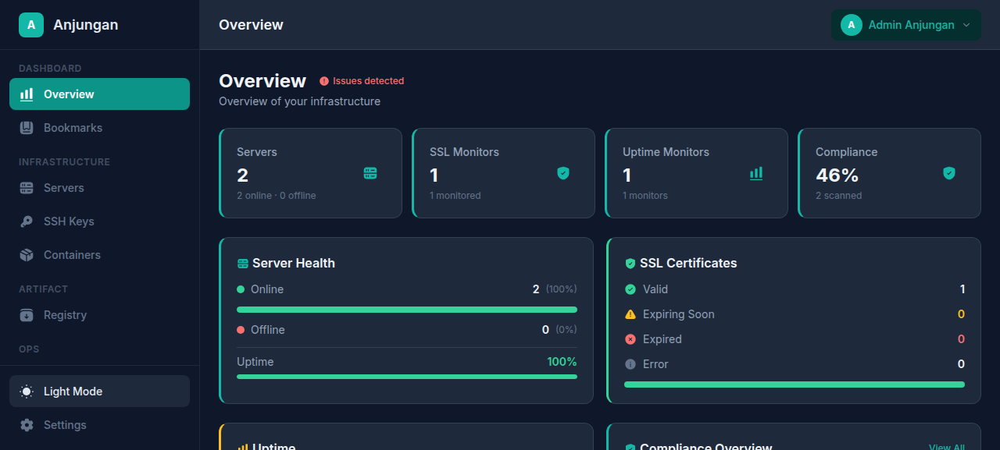
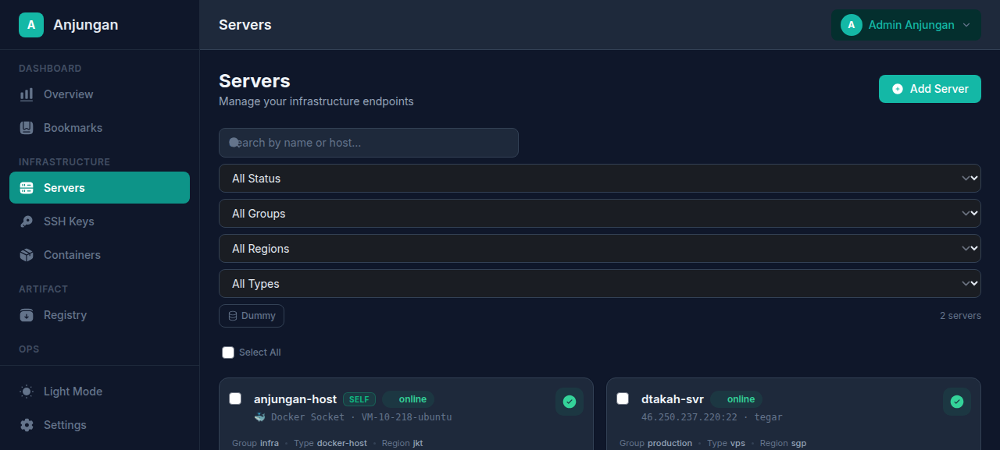
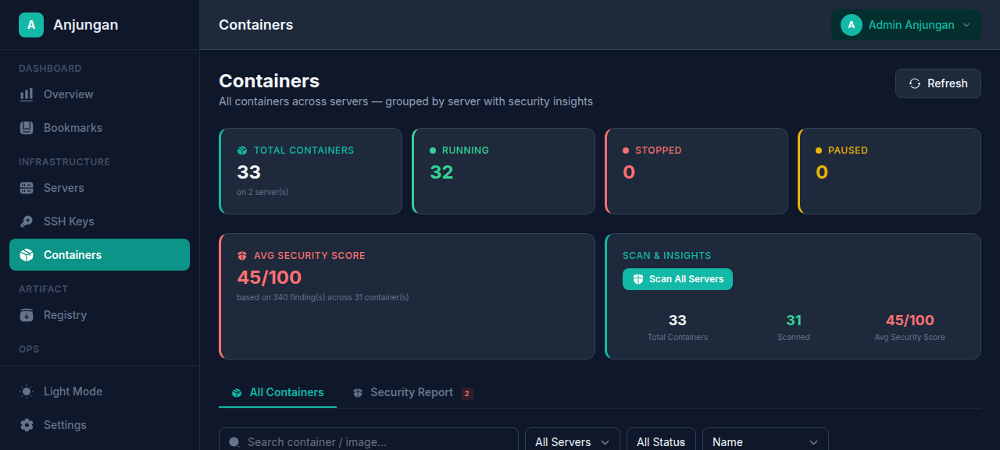
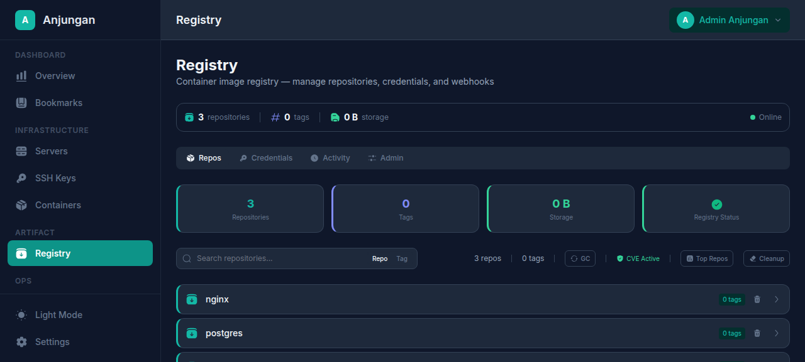

Anjungan is a modular IDP for managing servers, containers, container registries, SSH keys, SSL certificates, and infrastructure compliance — all through a unified, role-aware dashboard.
From server management to compliance scanning — Anjungan brings every DevOps tool into one cohesive interface.
SSH-key-based connection, WebSocket terminal access, resource monitoring, server grouping, and self-server auto-registration.
View containers across all servers, inspect details in real-time, monitor CPU/memory usage, and trigger security scans.
CIS-based audits (Level 1 & 2), Lynis hardening scans, Docker security checks, filesystem audits, and configurable compliance profiles.
Integrated Zot private registry with self-service credentials, RBAC (readonly/deploy/admin), image browser, webhooks, and tag protection.
Upload and manage ED25519/RSA keys per server, with fingerprint tracking, server assignment, and full CRUD operations.
Login attempt tracking, rate limiting, auto-lockout, IP blocking, and real-time alerts to Discord for suspicious activity.
Monitor SSL/TLS certificate expiry, automated TLS checks, cipher grading, chain validation, OCSP status, and historical trend charts.
HTTP/TCP ping monitoring with response time stats (min/avg/max/p95), real-time SSE events, status timeline, maintenance windows, and alert routing.
JWT + TOTP 2FA, role-based access control (admin/developer/viewer), login attempt tracking, auto-lockout, and rate limiting protection.
Shared notification targets for Telegram, Discord, Slack, and webhooks. Platform-optimized formatting, plus automated brute force alerts.
Entity-level audit trail with JSON details, login activity tracking, brute force detection, automatic IP blocking, and CSV export.
Global tool shortcut bookmarks with free-text entries, categories, descriptions, and pin/unpin for quick access to your most-used tools.
A unified interface for managing your entire infrastructure — from server health to container security.




Each domain is a self-contained package inside the backend. The frontend communicates via REST API with WebSocket for real-time features.
Anjungan leverages battle-tested tools and frameworks to deliver a reliable, performant platform.
Deploy Anjungan in minutes with Docker Compose. Self-hosted, secure, and fully customizable.